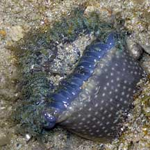
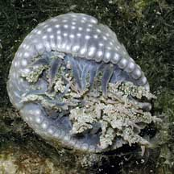
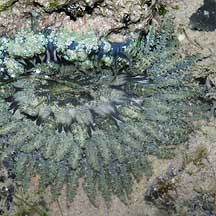
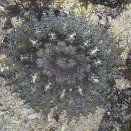
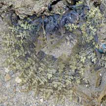
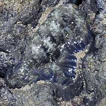
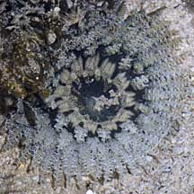
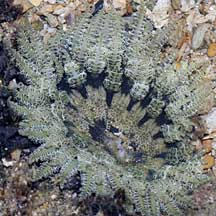
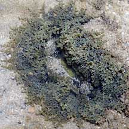

|
|
| sea anemones text index | photo index |
| Phylum Cnidaria > Class Anthozoa > Subclass Zoantharia/Hexacorallia > Order Actiniaria > Genus Phymanthus |
| Plain
frilly anemone Phymanthus sp.* Family Phymantidae updated Nov 2019 Where seen? This frilly anemone is seen on many of our shores. Usually among coral rubble. Features: Diameter with tentacles extended 8-12cm. Tentacles with many fine 'branches'. Generally all the tentacles are same uniform colour usually brown, greenish or greyish. 'Branches' are generally the same colour as the tentacles, but may be outlined in white. Oral disk dark with a broad border of pale or white bars that form a pattern resembling petals when the disk is expanded. Small dark spots throughout the oral disk. Body column dark with rows of small white bumps (verrucae). |
 Sisters Island, Jul 06 |
 Dark oral disk with broad white border and spots. |
 Body column dark with white verrucae. Sisters Island, Jan 04 |
|
 Pulau Tekukor, May 07 |
 Sentosa, Oct 03 |
 Sentosa, Jan 06 |
*Species are difficult to positively identify without close examination.
On this website, they are grouped by external features for convenience of display
| Plain frilly anemones on Singapore shores |
On wildsingapore
flickr
|
| Other sightings on Singapore shores |

 Terumbu Berkas, Jan 10 |
 Terumbu Salu, Jan 10 |
 Pulau Berkas, May 10 |
 Pulau Salu, Jun 10 |
 Pulau Pawai, Dec 09 |